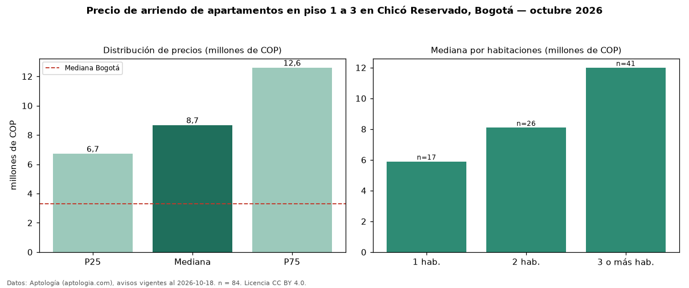

Precio de arriendo de apartamentos en piso 1 a 3 en Chicó Reservado, Bogotá — octubre 2026
COP 8,68 millones al mes es el canon mediano de apartamentos en piso 1 a 3 en arriendo en Chicó Reservado, Bogotá (n = 84 avisos). Eso es 13 % menos que la mediana de todos los apartamentos en arriendo de Chicó Reservado (COP 10 millones, n = 263); este segmento reúne el 32 % de esos avisos. Por metro cuadrado, la mediana es COP 68.750/m² al mes (n = 81), 1 % por debajo del conjunto de referencia (COP 69.583/m²). El área mediana anunciada es 144 m². El segmento con más oferta es el de 3 o más habitaciones (41 avisos, mediana COP 12 millones); pasar de 1 habitación a 3 o más habitaciones cambia la mediana +103 %. La administración mediana declarada es COP 1,56 millones al mes (n = 60), aparte del canon. La mitad central de los avisos va de COP 6,72 millones a COP 12,60 millones (razón 1,9), una dispersión moderada. El estrato más frecuente es 6 (100 % de los avisos con estrato). Datos: Aptología (aptologia.com), CC BY 4.0 — https://www.aptologia.com/arriendo/bogota/chico-reservado. Archivos: PDF, CSV con las cifras y gráfica PNG.

| Avisos únicos | 84 |
|---|---|
| Percentil 25 | COP 6.725.000 |
| Mediana | COP 8.678.018 |
| Percentil 75 | COP 12.598.750 |
| Mediana por m² | COP 68.750 |
Fuente: avisos vigentes de portales inmobiliarios recopilados por Aptología, deduplicados (mínimo 30 avisos únicos por celda). Precios pedidos, no cerrados. Fecha: 2026-10-18.